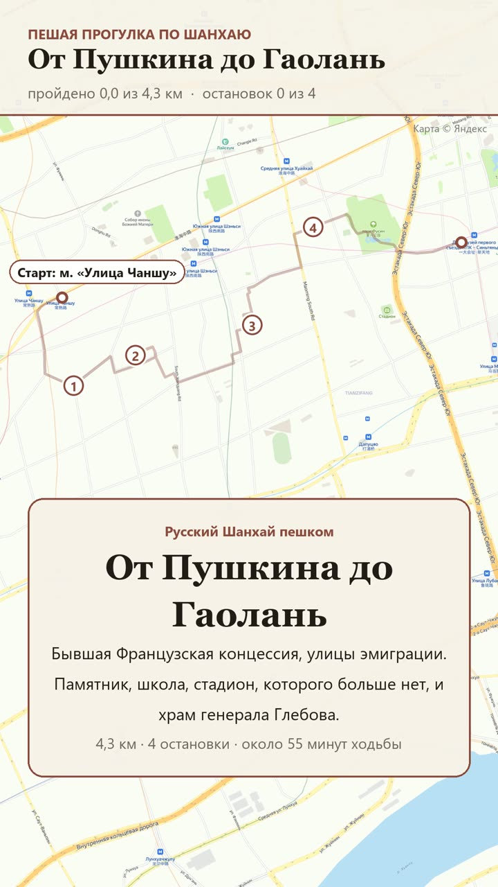
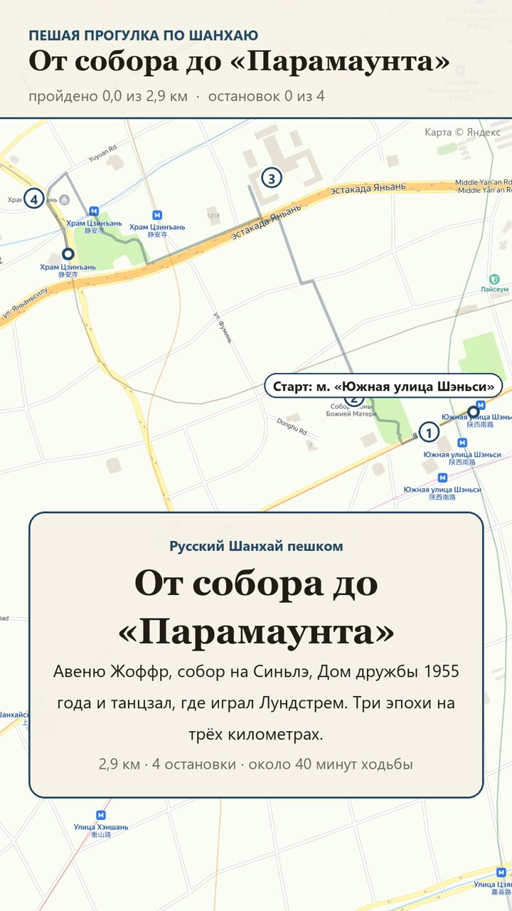
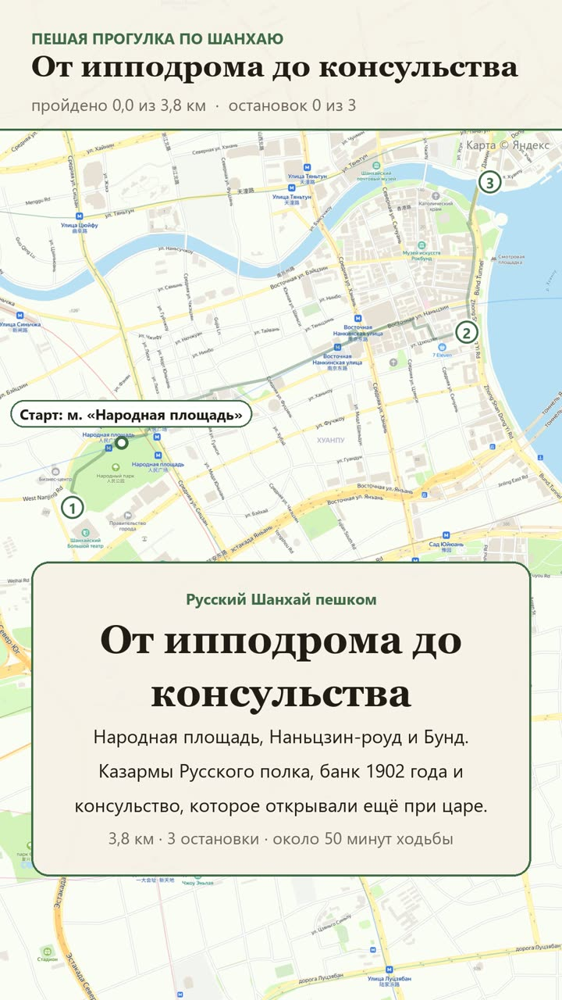

Маршруты路线
Здесь три пешие прогулки по русскому Шанхаю и шесть учебных листов. Прогулки собраны из мест, которые уже есть на сайте: у каждой остановки дом видно с тротуара, и у каждой есть своя страница. Линии проложены по пешеходным дорожкам OpenStreetMap, длину я считал по карте, не шагомером. Листы для урока — по одной истории, у 1950 года и флотилии Старка они только для чтения.
这里有三条走上海俄国史的步行路线和六张课堂纸。路线用的都是网站上已有的地点：每一站从人行道看得见房子，都有自己的页面。线是按OpenStreetMap的步行道画的，长度是按地图算的，不是计步器量的。课堂纸一个故事一张，1950年和斯塔克舰队那两张只用来读。
Пешие прогулки по городу城里的步行路线
Три прогулки из мест, которые уже есть на сайте. Каждую можно пройти за час-полтора и начать у метро.
三条路线，用的都是网站上已有的地点。每条一个到一个半小时，从地铁站出发。
От Пушкина до Гаолань从普希金到皋兰路
Памятник Пушкину → Школа «Реми» → Культурная площадь → Никольский храм
普希金像 → 雷米小学 → 文化广场 → 圣尼古拉堂
От собора до «Парамаунта»从圣母大堂到百乐门
Хуайхай у Южной Шэньси → Собор на Синьлэ → Выставочный центр → «Парамаунт»
淮海中路和陕西南路 → 新乐路55号圣母大堂 → 上海展览中心 → 百乐门
От ипподрома до консульства从跑马厅到领事馆
Бывший ипподром → Русско-Китайский банк → Консульство России
原跑马厅 → 华俄道胜银行 → 俄罗斯总领事馆
Ролики прогулок路线视频
Каждая прогулка — в вертикальном ролике меньше минуты: линия на карте, остановки и фото. Ролик — на странице прогулки.
每条路线都有一个不到一分钟的竖屏视频：地图上的线、站点和照片。视频在路线页面上。

От Пушкина до Гаолань从普希金到皋兰路
От собора до «Парамаунта»从圣母大堂到百乐门
От ипподрома до консульства从跑马厅到领事馆Листы для урока课堂纸
Шесть листов, по одной истории на лист. Вопрос до прогулки, задание на месте и вопрос после.
六张纸，一个故事一张。出门前的问题、现场任务和回来后的问题。
Пушкин в Шанхае普希金在上海
Почему первый памятник смотрел на север, а нынешний смотрит на юг?
为什么第一座像朝北，现在这座朝南？
Русский Шанхай после Гражданской войны内战以后的俄国上海
Что семьи сохранили в городе, когда война уже прошла?
战争过去以后，这些家庭在城里留下了什么？
1950: небо города1950：城市的天空
Почему советские лётчики в Шанхае — это не война в Корее?
为什么在上海的苏联飞行员不是朝鲜战争？
1955: Дом советско-китайской дружбы1955：中苏友好大厦
Почему выставочный центр нельзя склеить с лётчиками?
为什么展览中心不能和飞行员粘成一个故事？
1922: флотилия Старка1922：斯塔克舰队
Почему корабли на рейде — это не та же «русская улица», что Хуайхай?
为什么停在锚地的船，和淮海路那条「俄国街」不是一回事？
Школа «Реми» на Юнкан永康路上的雷米小学
Чем дом 1933 года отличается от школы, которая стоит в нём сейчас?
1933年的房子，和现在住在里面的学校，有什么不同？